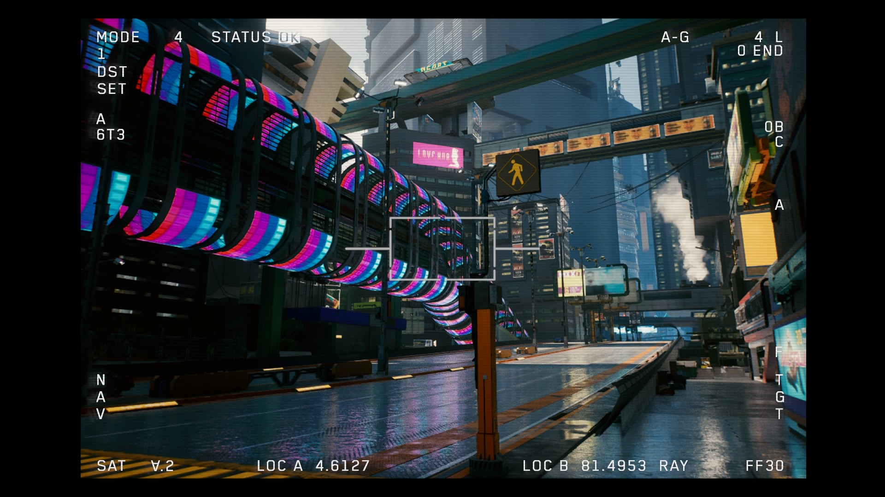
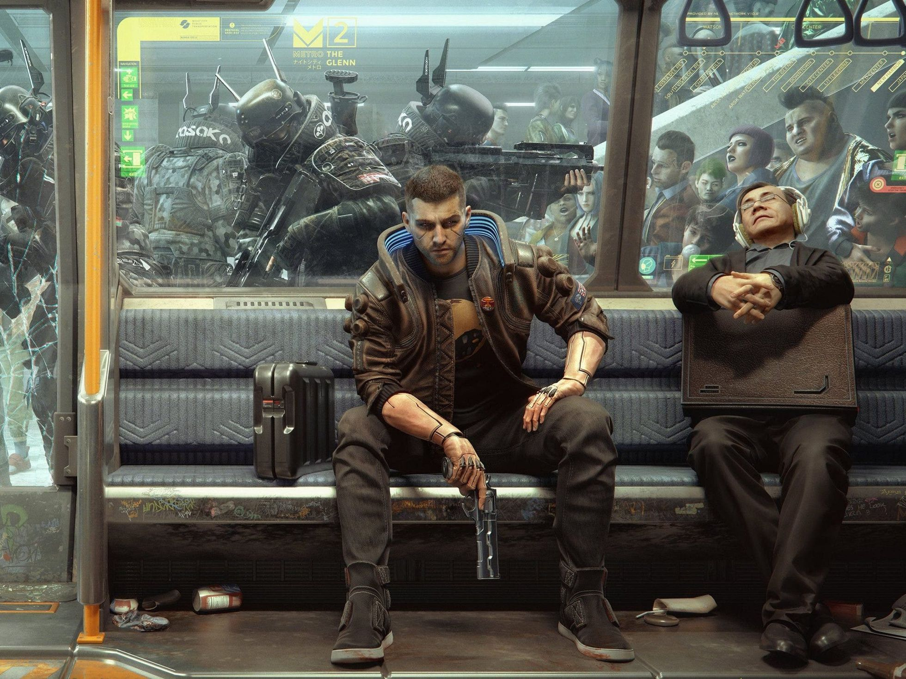
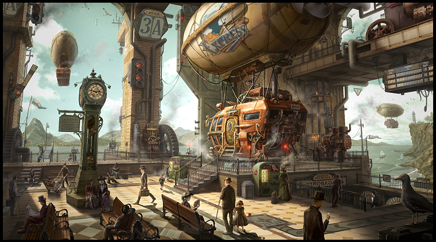
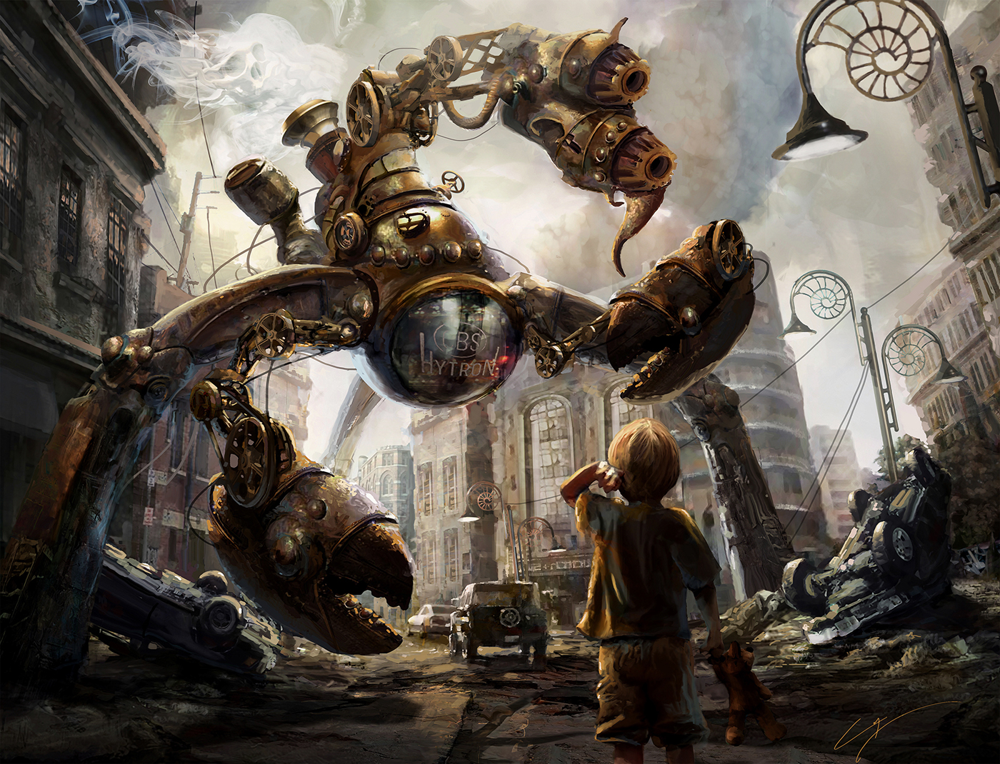

Cyberpunk; un amargo futuro

Es un subgenero de la ciencia ficcion que alude a un futuro con avances cientificos impresionantes
pero tambien un bajo nivel de vida.

Entre las multiples tramas que se dan en medio del genero cyberpunk
es notable la prescencia de hackers, inteligencias artificiales y megacorporaciones.
Algunas obras mas destacabales de este genero son;
Ghost in the shell(manga principal creado por Masamune Shirow)
Akira(manga creado por Katsuhiro Otomo)
Cyberpunk 2077, el mas reciente y mas popular exponente del subgenero

Al ser una idea del futuro que nos depara no se limita a un solo formato teniendo prescencia en comics, manga,peliculas,etc
Alta Fantasia; la escencia de la imaginacion

Es un genero que transmite sentimientos intensos al espectador,
una lucha epica y valerosa entre el bien, el mal,personajes y el mundo.

Es comun que estas historias tomen elementos fantasticos para construir su mundo tales como; monstruos, caballeros, elfos, hadas,dragones,etc.
Para estas historias tambien toman importantes elementos de la vida real como la vida de una persona, una leyenda u incluso otras historias.

Hay muchos titulos famosos de este genero,estos son algunos:
-El señor de los anillos (escrita por J.R.R Tolkien)
-Cancion de hielo y fuego (escrita por George R.R Martin)
-Harry Potter (escrita por J.K Rowling)
Steampunk; Un pasado mecanico

No solo un genero literario, sino tambien un movimiento artistico y sociocultural debido a una estetica retrofuturista donde la tecnologia con vapor es aun predominante.
Las historias suelen situarse en los años 1800-1918.

Una fuente de inspiracion vital fueron obras e ideas de las personas del pasado de como se imaginan el futuro teniendo algunos elementos fantasticos.
Existen novelas que sirvieron como combustible de este genero de la ficcion tales como:
-La guerra de los mundos(1898)
-Veinte mil leguas de viaje submarino(1869)
-El mundo perdido(1912)